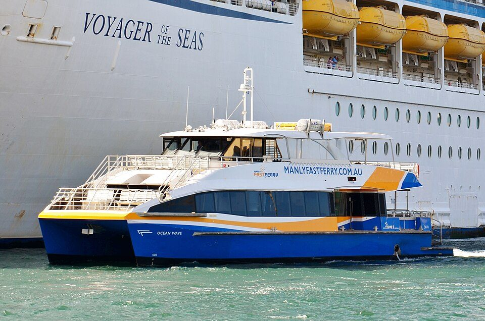

Encyclopedia of our planet · 42 articles
Planet Earth
An encyclopedia of our planet: its interior, the oceans, climate, life, the world's landscapes and our impact, with photos, figures, records and simulators.
Numbers to start with
- 4.54 billion yearsage of the Earth
- 71%of the surface covered by oceans
- 8,849 mheight of Everest, the highest point
- 10,935 mdepth of the Mariana Trench
- 8.7 millionestimated species on the planet
- 5,400 °Ctemperature of the inner core
Sections
 6 articlesInside the EarthThe planet's layers, tectonic plates, volcanoes, earthquakes, rocks and minerals, and the 4.54 billion years of history they hold.
6 articlesInside the EarthThe planet's layers, tectonic plates, volcanoes, earthquakes, rocks and minerals, and the 4.54 billion years of history they hold.
6 articlesOceans and waterSeas, currents, tides, life in the deep, rivers, lakes, glaciers and the endless journey of every drop of water. 6 articlesAtmosphere and climateThe air that protects us, clouds and weather, storms and hurricanes, the world's climates, climate change and the sky's light shows.
6 articlesAtmosphere and climateThe air that protects us, clouds and weather, storms and hurricanes, the world's climates, climate change and the sky's light shows. 7 articlesLife and ecosystemsHow life began, how it evolves, the planet's astonishing biodiversity, its great ecosystems and the extinctions that changed everything.
7 articlesLife and ecosystemsHow life began, how it evolves, the planet's astonishing biodiversity, its great ecosystems and the extinctions that changed everything. 6 articlesWorld geographyContinents, mountains, deserts, islands and poles: the planet's great landscapes and the astonishing variety of Spain.
6 articlesWorld geographyContinents, mountains, deserts, islands and poles: the planet's great landscapes and the astonishing variety of Spain. 6 articlesOur impactEight billion people: humanity's footprint on the planet, pollution, plastics, deforestation and the solutions that already work.
6 articlesOur impactEight billion people: humanity's footprint on the planet, pollution, plastics, deforestation and the solutions that already work. 5 articlesEarth curiositiesSimulators, planet records, the most extreme places, astonishing phenomena and myths about the Earth.
5 articlesEarth curiositiesSimulators, planet records, the most extreme places, astonishing phenomena and myths about the Earth.